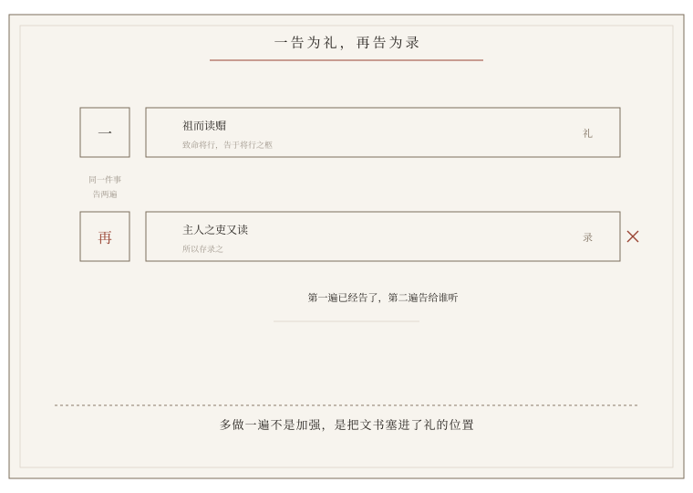

檀弓上 · 三·九十二 · 第 295 课
读赗，曾子曰：「非古也，是再告也。」
说什么事：出葬之前，行「读赗」之礼。曾子说：这不是古礼，这是把已经告过的事再告一遍。
落在哪一层：仪节之重复。论「一告已足，再告为赘」。
为何编在此位：上一课论「有余当归」，是取与之界；此课论「告之再」，是言语之界。两节相邻，皆在辨「多出来的一步」。
【经】讀賵，曾子曰：「非古也，是再告也。」
【注】曾子言非禮，祖而讀賵，致命將行，主人之吏又讀賵，所以存錄之。
【疏】（底本此节无疏文。此条紧接「孟献子之丧」一节，郑注附于其后，疏家不别出。）
读赗 赗，助葬的财物（车马曰赗，货财曰赙，衣服曰襚）。读赗者，将所赠之物与赠者之名，当众宣读。
非古 不是古礼。「古」在此指礼之本制，非指年代久远。
再告 告第二次。告者，以言辞达于死者与众人。
祖 注「祖而读赗」。祖，出葬前祭道神之礼，行于庙中，将行之时。
致命将行 致命，致其赠物之命（宣读赠者之意）；将行，柩将出。
主人之吏 丧家之吏。注谓此吏又读一遍，故曰「再告」。
存录之 记下存档，以备后查。
出葬之前行读赗之礼，曾子说：「这不是古礼，这是把已经告过的事再告一遍。」
此节极短，却是一条关于「重复」的判断。
注讲清了重复发生在哪里：先「祖而读赗，致命将行」——在祖祭时读一遍，把赠者之意致于将行之柩；然后「主人之吏又读赗」——丧家自己的吏再读一遍。
同一件事，告两遍。第一遍是对死者与送葬者，第二遍是「所以存录之」，即为了记账存档。
曾子说：非古也，是再告也。
这话不是反对记账，是反对把记账混进礼仪。告是礼，录是文书；文书归文书，不该穿着礼的衣服再走一遍。一旦如此，礼就多出一段没有对象的动作——第一遍已经告了，第二遍是告给谁听呢。
第一层 礼的「一次」原则 礼之有节，节各有其义。一义一动作，义尽则止。再告的动作没有新义，只有重复；重复在礼里不是加强，是虚耗。此节所驳，正是「多做一遍总不吃亏」的念头。
第二层 为什么古人会加上这一段 注末三字「存录之」，把动机说得坦白：为了留下记录。这不是坏动机。丧事牵涉财物往来，赗物有主有名，不记则后无以核。问题只在于——它借用了一个已有的礼的位置，把文书塞进礼仪里，于是两件事都做不干净：礼多了一段空，文书多了一层壳。
第三层 曾子的判法 曾子只说「非古也」，不说「非礼也」。三字之差，见其分寸。非古，是就源流说：这不是礼本来的样子。他不去断「此举有罪」，只指出「此非其旧」。礼家之驳，多取此法——不问你错在哪里，只问你这一步是从哪里来的。
第四层 本节无疏的意义 此节无疏，是底本之实。凡无疏之节，多是经文短、注已尽意、无可再申者。这一条正文二十六字，注入二十字，意思已足：一告为礼，再告为录。疏家不别出，是因为没有第三个层次可说。读者不必以此为缺。
与今日何干 今人办事，常有「再确认一遍」的环节：开会已定，再发一份纪要；纪要已发，再口头复述。若目的是留档，那是文书；若把它算作仪式的一部分，就成了此节的「再告」——同一个意思，走了两遍，谁也不更清楚。
| 左 | 右 |
|---|---|
| 祖而读赗 | 第一遍·礼 |
| 致命将行 | 其时其位 |
| 主人之吏又读 | 第二遍·录 |
| 所以存录之 | 动机是记账 |
| 非古也 | 曾子之断 |
| 是再告也 | 曾子之由 |
| 一告义尽 | 礼之节 |
| 再告无义 | 礼之赘 |
画一处庙中祖祭之场景，视点从侧面略远。中央停放一具已饰的柩，柩前设俎豆数器。柩之左侧立一位祝者（正面、双手举一支竹简作宣读之状）；柩之右侧，一位吏者伏于案上，案面摊开一卷竹简与一支笔，案边另置一只木匣。祝者与吏者之间隔着那具柩。不写文字、不画人面细节。赭色只用在祝者手中的竹简，与吏者案上那卷已展开的简。
